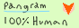

Modern Motherfucking Plaintext
(View separately at https://dreamstation.systems/Modern%20Motherfucking%20Plaintext.txt)
Modern Motherfucking Plaintext This is a fucking text file. And in a lot of situations, it’s all you fucking need. Plain text stopped meaning ASCII a long time ago. Every operating system on Earth supports Unicode, and Unicode is beautiful. Unicode contains most (albeit not all) characters anyone has ever bothered to write down. And you still type like you’re using a Model 33. Stop it. § Your quotes are fucking dumb "These" are “dumb quotes”. They are called that because they make you look dumb. They are not a real thing — you will never see a book that "prints dialogue like this". They were a convenience for typewriters that were too cheap to add another button, they were carried forward into ASCII because they were too cheap to add more bits, and they remain today as an ASCII compatibility character. “These” are actual fucking English quotation marks. They open and then they close. By the way, the apostrophe is not ' either. It’s ’. ’, not ‘, is also used for apostrophes of omission (’90s, not ‘90s). Yes, your typesetting software gets this wrong. § - is not ‐ is not ‑ is not – is not — is not − The character on the - button on your keyboard is called a HYPHEN-MINUS¹. It, too, is not a real character. It is called a HYPHEN-MINUS because it was a typewriter convenience designed to serve as all of a minus sign or a hyphen or “anything that happens to look like that”. There are more specific characters for each job. Use them: • ‐, the hyphen, for compounds • ‑, the non‐breaking hyphen, for keeping things like names on one line • –, the en dash, for ranges and relations (9–5; New York–London flights) • —, the em dash, for a break in thought — like this one • −, the actual minus sign ¹Yes, I know. Unicode officially gives all characters a name in ASCII, and I’m using that name. § There are other languages It’s café, not cafe. Łódź, São Paulo, Nguyễn, Zoë, Beyoncé, Björk. Spell things right. Also, use the correct quotation marks for a language: “like this”, „wie das“, « comme ça », ”så här”, and 「こんな感じ」. If you’re writing in a language, write in that motherfucking language. § The rest of your shit is wrong too There are characters that are more correct for everything you’re currently approximating with ASCII: • …, the ellipsis • ×, for multiplication • ′ ″, for prime marks • °, for degrees • → ← ↑ ↓ ⇒ ↔, for arrows • ✓ ✗, for checks • •, the bullet • © ® ™ § ¶, for legal bullshit § “But I can’t type any of this.” Yes you fucking can. Set a compose key or use Ctrl + Shift + U on Linux, and use Alt codes on Windows. You don’t need a word processor or HTML for this. Unicode has had all this for years. This is just plaintext, done properly. This is a motherfucking plaintext file that has better typography than your typical Word doc. It’s modern. It’s correct. And it’s fucking beautiful. ⁂ Inspired by <https://modernmotherfuckingwebsite.dreamstation.systems/>, <https://motherfuckingwebsite.com/>, and <https://justfuckingusehtml.com/> Human‐written: <https://www.pangram.com/history/0e8cdc31-b349-4f9f-906b-3d495b7d006a?ucc=tp64Jv2K7C4> (Yes, I’ve given up the fight on LS and PS over [CR]LF. So it goes.)